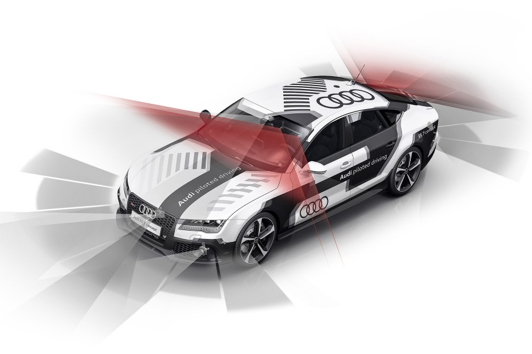

Fonctionnement en bref des véhicules autonomes, défis techniques
par Cédric PESQUET
Un véhicule autonome est un véhicule automobile apte à rouler, sur route ouverte, sans intervention d'un conducteur. Le concept vise à développer et produire un véhicule pouvant réellement circuler sur la voie publique dans le trafic sans intervention humaine en toutes situations, à terme. C'est une application typique du domaine de la robotique mobile dans laquelle de nombreux acteurs sont engagés. Néanmoins de nombreuses questions techniques, légales, psychologiques et juridiques restent non résolues
La notion de voiture autonome peut recouvrir aussi bien un véhicule totalement autonome ou bien un véhicule « semi-autonome » disposant de différents systèmes d'aide à la conduite automatisée, par exemple en ville ou sur autoroute, ou encore de système de stationnement automatisé.

Comment les voitures autonomes fonctionnent ?
Tous les constructeurs n’utilisent pas exactement les mêmes technologies pour le fonctionnement de leurs véhicules autonomes mais leurs technologies se ressemblent.La Nissan Leaf utilise elle les principaux capteurs ;
Des scanners lasers
Le projet Leaf utilise des scanners laser pour détecter les objets et son environnement. Les radars avant peuvent voir la route jusqu’à 200 mètres devant le véhicule et les radars arrière jusqu’à 70 mètres.
Cette technologie de télédétection par laser est appelée LIDAR : « light detection and ranging » soit la détection et estimation de distance par la lumière/ par laser. Techniquement, il s’agit de mesurer des distances en analysant les propriétés d’un faisceau lumineux qui est réfléchi vers son émetteur.
Des sonars à ultrasons
En plus de scanners lasers, la voiture de Nissan utilisera des sonars à ultra son. Les sonars permettent de valider les données fournies par les scanners lasers. La portée des sonars est plus limitée que celle des scanners laser et ils ne sont effecace qu’à très faible vitesse, ils sont donc surtout utiles pour détecter les objets proches notamment lors de stationnement.
Des caméras
Des caméras sont également utilisées pour une vision 360. Les caméras détectent notamment les lignes et bandes de la route afin que la voiture reste sur cette dernière.
Les caméras servent au respect du code de la route. Elles peuvent détecter les feux rouges, panneaux et clignotants des autres véhicules pour adapter le comportement de la voiture.
La localisation satellite
Pour se diriger et établir son itinéraire, le véhicule doit connaitre son géopositionnement. Plusieurs technologies peuvent être utilisées, elles utilisent toutes le positionnement par satellite
- GPS, Global Positioning System. C’est le système de positionnement satellite le plus populaire, il est la premier a avoir vu le jour. Son origine est américaine.
- GLONAS, Globalnaïa Navigatsionnaïa Spoutnikovaïa Sistéma, soit « système global de navigation satellitaire » en russe. C’est l’équivalant du GPS made in Russia.
- BEIDOU / COMPASS, l’équivalent chinois.
- GALILEO, produit par l’union européenne, il permet une localisation plus précise (au mètre près). La voiture peut ainsi savoir sur quelle voix elle se situe sur l’autoroute.
- QZSS, Quasi-Zenith Satellite System : équivalent japonais, en cours de développement et qui devrait permettre un géopositionnement à quelques centimètres près.